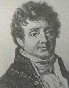
Jean Baptiste Joseph Fourier 1768 - 1830
Fourier
stammt aus einer unbegüterten Familie. Er hat es der Revolution und
Napoleon zu verdanken, dass er sich seiner Begabung entsprechend entwickeln konnte.
Die Veröffentlichung seiner Untersuchungen zur Wärmeleitung
(1807) wurde von seinen Gutachtern LAGRANGE, LAPLACE und LEGENDRE
abgelehnt. Erst 1822 konnte er sein Buch Théorie analytique de la
chaleur, das auch die Theorie der Fourier-Reihen enthält,
veröffentlichen.
[K. Simonyi: Kulturgeschichte der Physik, Budapest
1990]
Fourier-Transformationen gehören zu den wichtigsten mathematischen Werkzeugen
der Signalverarbeitung und des Systementwurfs. Sie ermöglichen die Umwandlung
einer Zeitfunktion oder Folge in ein Spektrum (bzw. die Impulsantwort in den
Frequenzgang) und umgekehrt. Die Spektraldarstellung ist in den meisten Fällen
anschaulicher als die Darstellung im Zeitbereich.
Man unterscheidet je nach
Signalform vier Transformationen:
| Zeitbereich | Frequenzbereich | Bezeichnung |
| kontinuierlich / aperiodisch | kontinuierlich / aperiodisch | Fourier-Transf. |
| kontinuierlich / periodisch | diskret / aperiodisch | Fourier-Analyse |
| diskret / aperiodisch | kontinuierlich / periodisch | Fourier-Transf. diskreter Signale |
| diskret / periodisch | diskret / periodisch | diskrete Fourier-Transf. (DFT) |
Folgende Variablen werden verwendet:
| Zeitsignal: kontinuierlich, aperiodisch |
Frequenzsignal: kontinuierlich, aperiodisch |
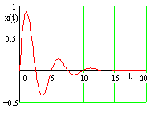 |
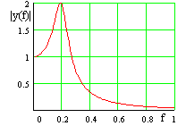 |
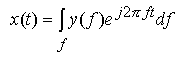 |
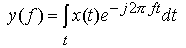 |
| Die Betragsdarstellung setzt sich aus Realteil und Imaginärteil zusammen | |
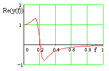 |
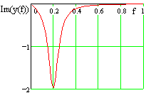 |
| Fasst man die Zeitfunktion als Impulsantwort eines Systems auf, dann entspricht das Spektrum dem Frequenzgang. Dieser wird üblicherweise als Betrags- und Phasendarstellung im logarithmischen Massstab angegeben (Bode-Diagramm). | |
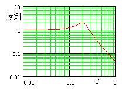 |
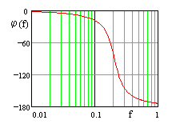 |
| Die Simulation SIM1 (67 k) zeigt ein System 2. Ordnung mit unterschiedlichem Dämpfungsverhalten. | |
| Zeitsignal: kontinuierlich, periodisch |
Frequenzsignal: diskret, aperiodisch |
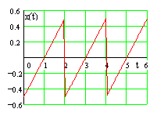 |
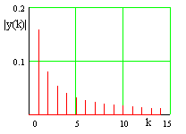 |
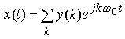 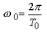 |
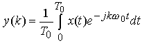 |
| Für die gewählte Zeitfunktion ist der Realteil des Spektrums nahezu null, der Imaginärteil ist daher identisch mit dem Betrag. | |
| Die Simulation SIM2 (22 k) zeigt die Fourier-Synthese einer Dreieckschwingung aus den ersten 10 Teilschwingungen (y(k)), die aus der Fourier-Analyse gewonnen wurden. An den Unstetigkeitsstellen der Zeitfunktion erkennt man Überschwinger, die als Gibb´sches Phänomen bekannt sind. | |
| Zeitsignal: diskret, aperiodisch |
Frequenzsignal: kontinuierlich, periodisch |
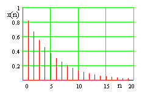 |
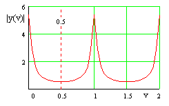 |
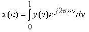 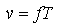 |
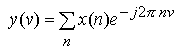 |
| Die Simulation SIM3a (32 k) zeigt das Spektrum einer abgetasteten e-Funktion mit variabler Zeitkonstante. | |
| Diskreter Zeitsignale werden häufig durch Abtastung (A-D-Wandlung) kontinuierlicher Funktionen gewonnen. Bei ihrer Transformation ist das Abtasttheorem von Shannon zu beachten: der höchste im Signal vorkommende Frequenzanteil muss kleiner sein als die halbe Abtastfrequenz. Nur unter dieser Bedingung ist eine Rekonstruktion des Zeitsignals aus dem Spektrum fehlerfrei möglich. Bei Nichtbeachtung tritt der nicht korrigierbare Alias-Fehler auf. Bei obiger Darstellung muss das Spektrum des abzutastenden Signals auf v = 0,5 bandbegrenzt sein. | |
| Die Simulation SIM3b (102 k) zeigt die Abtastung einer sin-Schwingung mit variabler Frequenz bei konstanter Abtastfrequenz. Zur Verdeutlichung werden die Abtastwerte durch einen DA-Wandler in ein stufenförmiges Analogsignal zurückverwandelt. Es zeigt sich, dass das Analogsignal bei v = x und bei v = 1-x dieselbe Frequenz hat. Die Frequenzen oberhalb von v = 0,5 werden als Alias-Frequenzen bezeichnet. | |
| Zeitsignal: diskret, periodisch Die dargestellten N = 32 Abtastwerte entsprechen einer Periode des diskreten Zeitsignals. |
Frequenzsignal: diskret, periodisch Die dargestellten N = 32 Spektralwerte entsprechen einer Periode des periodischen Spektrums. |
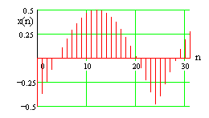 |
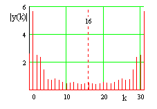 |
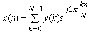 |
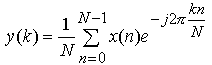 |
| Darstellung des Spektrums als Real- und Imaginärteil | |
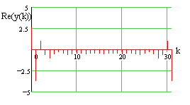 |
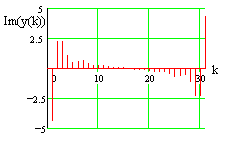 |
| Das DFT-Spektrum ist immer symmetrisch (Realteil symmetrisch, Imaginärteil antisymmetrisch). Die obere Hälfte des Spektrums liegt im "verbotenen" Frequenzbereich; für die Rücktransformation in den Zeitbereich wird dieser Bereich natürlich benötigt. Für die numerische Lösung des Fourier-Integrals wird nur der Bereich bis zur halben Taktfrequenz (untere Hälfte) herangezogen | |
| Die Bedeutung der DFT hat durch die Möglichkeit ihrer schnellen Berechnung mittels FFT (Fast Fourier Transform) enorm zugenommen. Mit FFT-Analysatoren z.B. können Signale und Systeme gleichzeitig im Zeit-und Frequenzbereich untersucht werden. Die Lösung des Fourier-Integrals (FOUR1) mit dem Rechner benutzt auch den FFT-Algorithmus. Auch das Goertzel-Filter, ein hochempfindlicher Frequenz-Detektor, ist aus der DFT-Summenformel abgeleitet. | |
Literaturhinweis
Die Literatur über Fourier-Transformationen ist sehr zahlreich. Eine
gute umfassende Darstellung findet man im Lehrbuch
Oppenheim/Willsky/Young: Signale und Systeme, VCH Verlagsgesellschaft Weinheim 1992
Quelle: www.fh-dieburg.de/netteach/Fourier/four_doc.htm